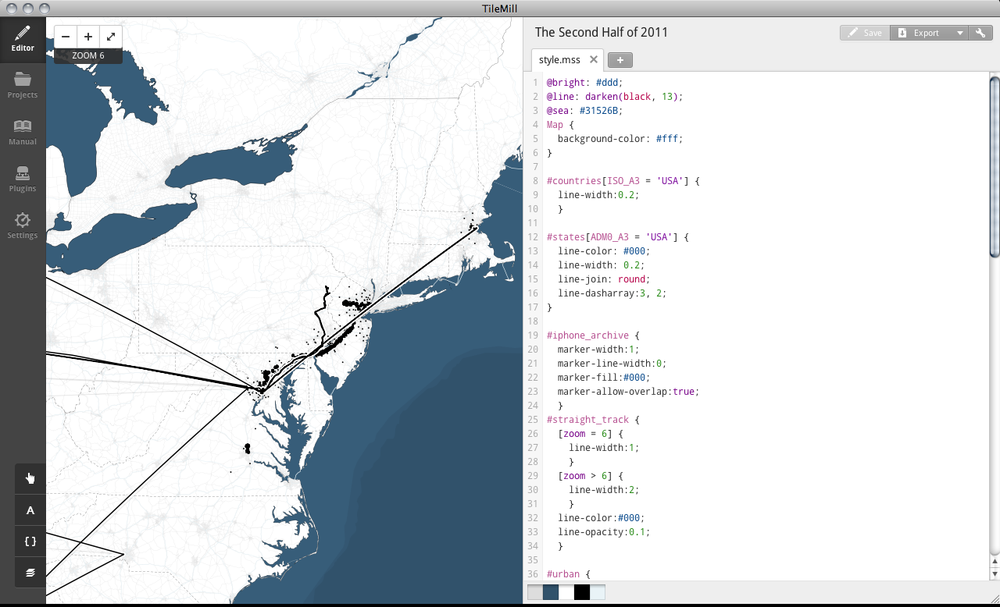
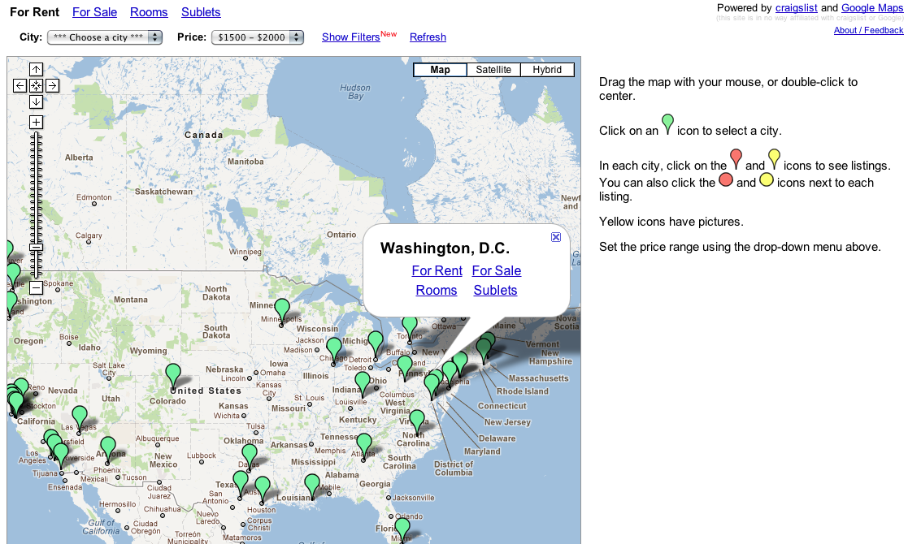
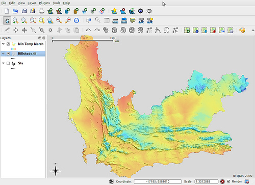
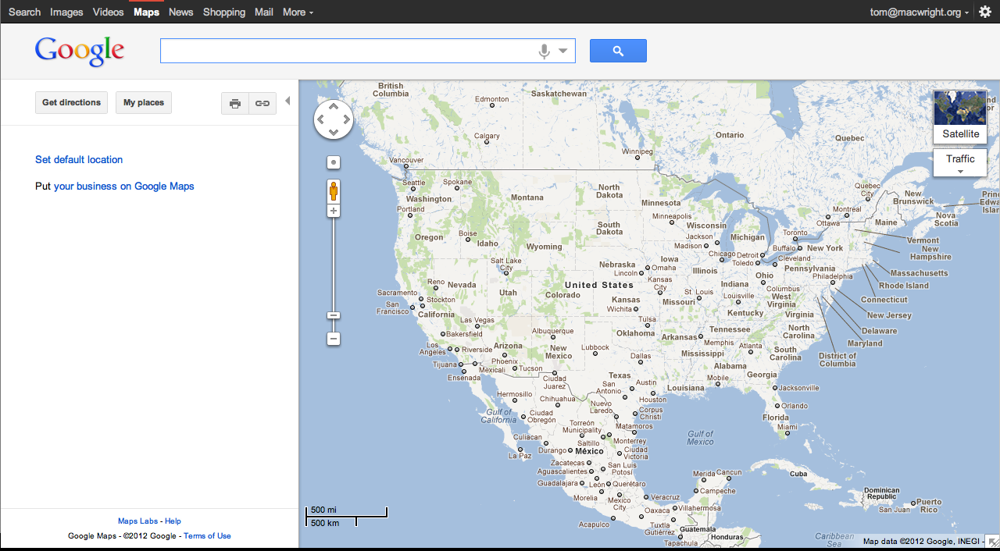
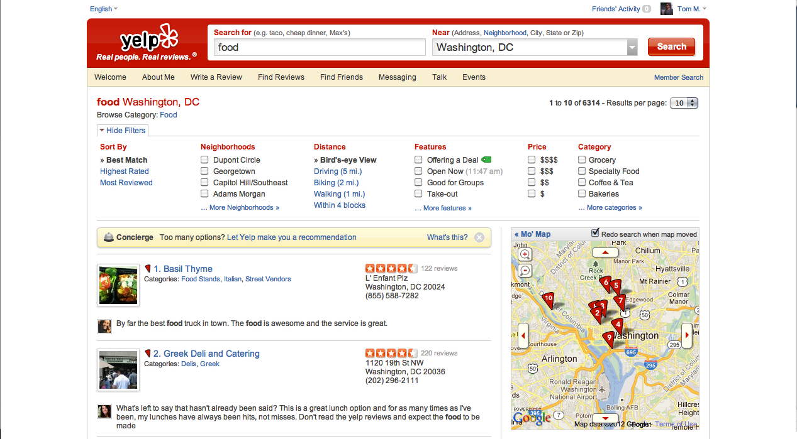
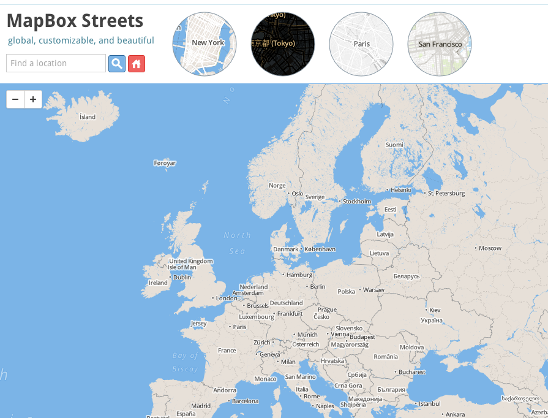
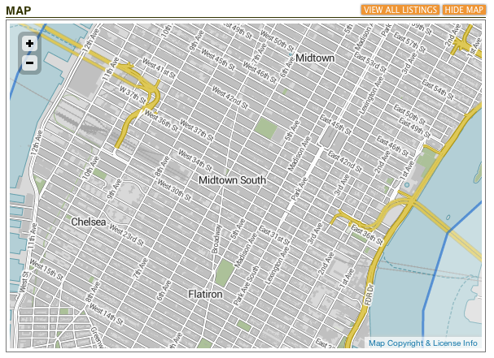

hi
@tmcw
Tom MacWright
 MapBox
MapBoxTileMill
MapBox
Hosting
MapBox
MapBox Streets
MapBoxYoung Hahn
Rendering the World
2pm here
"Beyond the Google Maps Paradigm"
In the beginning, there was Google Maps*
*technically there was Where 2 Technologies which was acquired by Google in 2004
Google
begat Google Maps API

Maps API
begat OpenLayers
OpenLayers
begat Leaflet
OpenLayers
begat* Polymaps / Modest Maps *kind of
Current cool kid: Leaflet* (see 4pm: OpenLayers: The Rebirth of Cool)
"The OpenOffice Effect"
Microsoft Word

OpenOffice Writer

ESRI

QGIS 
and the assumptions played on
tiles are tiles

your map is everyone's map

interact with the map by clicking, dragging, and your mousewheel* *except esri
not bad things
quite smart
WMS 1.0.0 born April 2000
Google proved maps could be scalable & popular
but
<technology changes what we do>
comic sans
interface: 2004
interface: 2012

how we use maps: 2012
2003
2012
navigation concerns → label concerns

next: high-dpi
</technology>
so what happens when maps can be fast, pretty, and dynamic?
what happens when maps can be fast?
→ frames per second
Super Mario Brothers (1985)

getting there
did you notice a zoom / pan bar?
maps: 
maps:

(geek history)
PHP → node.js
OpenLayers (900KB) → Modest Maps (40KB)
features → performance
what happens when maps can be dynamic?

there is so much that doesn't matter
going home:

going home:

going home:


We are not blameless
what happens when we can make maps pretty?
pretty maps are played out
40mhz
with the expressiveness of
PowerPoint
the real revolution is access

LOOKING AT PAPER
"OpenStreetMap proves that
citizens make maps of their surroundings with greater
detail and focus than any company ever could."
-me
"OpenStreetMap proves that
citizens design maps of their surroundings with greater
detail and focus than any company ever could."
-me
"OpenStreetMap proves that
citizens design maps of their surroundings with greater
detail and focus than MapBox ever could."
-me
"GIS Professionals"
GeoNerds
'people who can make maps'
StreetEasy 
New York is another world NYC Open GIS + Custom Neighborhoods + OSM
Google Maps got us halfway, TileMill halves it again
Thank you!
Tom MacWright